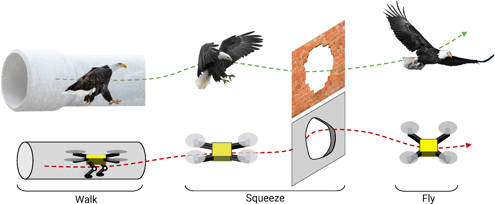

We are hiring multiple talented Ph.D. students, Masters students for Directed Research/Thesis and Undergraduates for MQPs in the field of aerial robotics and Computer Vision/Robot Perception.
Come push the boundaries of what is possible on tiny robots with us!
Our mission is to tackle fundamental problems in robot perception and autonomy to enable better life. We work on pushing the boundaries of autonomy at extreme resource constrained tiny robots using only on-board computation and sensing. In-particular we work on navigation of nano-drones (and other robots) using only cameras and inertial sensors and onboard computation without the need for external infrastructure such as GPS or motion capture systems. We call our approach to autonomy as Minimal-AI due to the nature of its design and its efficiency in solving the desired tasks. We utilize concepts from Active Perception, Interactive Perception, Passive and Novel computing and Deep Compression.
Our current members include Ph.D. students, Masters students and undergraduate students across various nationalities and ages. We actively seek funding, collaboration and new research areas with the common theme mentioned above. We work on pushing the boundaries of what is possible today's robot autonomy with realistic constraints.
We are currently hiring in four domains:
Some FAQs are given below:
High-speed autonomous flight through cluttered environments
Autonomous flight has been achieved in low-speed scenarios with a suite of sensors such as cameras, inertial sensors and LIDARs. There are even products like the Skydio drone or the DJI Drones that can do this today. However, finding safe regions to fly fast to in a cluttered scene is still an open challenge. The question becomes even harder, when we limit the size and thereby the computation and sensory capabilities of the robots to the size of a hummingbird.
The goal of the Ph.D. research/Masters research is to explore various strategies in visual representation, neural compression and reinforcement learning to push robot autonomy at nano-quadrotor scales (<120mm size and <200g weight) to achieve 30m/s flight in cluttered environments such as forests.
Read about our research in this area given below (please check out the papers in the following links):
Robust light-weight sensor fusion using deep learning

Autonomous navigation often involves estimation of egomotion/odometry to take the next control action. However, sensors are often noisy and hence directly using any single sensor for estimation of egomotion is not desired. To this end, roboticists use a plethora of sensors on robots and exploit the complementary nature of their noises to obtain a better estimate. This is often achieved Bayesian filters such as a Kalman filter. Despite this massive success, it becomes hard to tune the parameters and often the accuracy is limited by the resolution of calibration. To this end, we propose to utilize deep learning to enable better sensor fusion followed by network quantization for deployment on tiny robots.
The goal of the Ph.D. research/Masters research is to explore various strategies in multi-sensor fusion for autonomy using cameras (event-based and classical), inertial sensors and acoustic sensors to push robot autonomy at nano-quadrotor scales (<120mm size and <200g weight) to achieve flight in cluttered environments such as forests.
Read about our research in this area given below (please check out the papers in the following links):
Morphable aerial robot navigation through tight spaces

Birds possess a remarkable combination of morphing abilities that enable them to navigate through narrow spaces with astonishing agility. One key aspect is their capacity to fold their wings tightly against their bodies, reducing their wingspan and allowing them to effortlessly maneuver through tight gaps and intricate environments. This folding ability, combined with their adept walking skills, grants birds unparalleled adaptability. By utilizing their wings as additional limbs, birds can maintain balance and stability while navigating narrow surfaces. This unique blend of folding wings and walking proficiency empowers birds to explore and exploit even the most challenging aerial and terrestrial landscapes, showcasing their remarkable versatility and mastery of movement.
The goal of the Ph.D. research/Masters research is to explore various strategies for design of morphing strategies based on percpetion and morphology agonistic minimal visual scene representations for navigation in cluttered environments such as forests/air conditioning ducts.
Novel Sensing Using Passive Computation

In the intricate tapestry of the natural world, animals have evolved fascinating strategies to perceive and comprehend the three-dimensional scenes that unfold before them. One remarkable adaptation lies in their eyes and acoustic senses, which have embraced asymmetry to decode spatial structures. Many animals possess eyes positioned on opposite sides of their heads, allowing for a wider field of view and depth perception. This disparity in visual input helps them gauge the distance and orientation of objects, enabling them to navigate complex environments with precision. Additionally, certain species have developed specialized auditory systems that leverage sound localization to map their surroundings. By discerning minute differences in the arrival time and intensity of sounds, these creatures can construct a mental map of their 3D environment. Through the evolution of asymmetrical sensory mechanisms, animals have unlocked the ability to perceive and interpret the multidimensional world they inhabit, showcasing nature's ingenuity and adaptability.
When building tiny autonomous robots, one needs to re-imagine the sensor suite and go back to the drawing board to propose novel ways to receive sensor information and process them. We work on the physical modelling using mathematical tools from computational imaging to push the boundaries of what is possible with minimal amount of sensing and perception.
The goal of the Ph.D. research/Masters research is to explore various strategies for crafting such structures driven through modelling and simulation. We aim to explore reinforcement learning to explore sensory design for pushing sensing capabilities at tiny scales using coded apertures and coded lenses for navigation.
Why work with us?
- We do cutting-edge and world-class research and our work has won many awards and has attracted a lot of media attention. More information can be found here.
- Whatever career path you desire, be it industry or academia or setting up your own startup, working at PeAR will enable you to achieve your dreams. Prof. Sanket dedicates a lot of time talking to his students and mentoring them to aid in brining out the best in his students. PeAR students work at the best places currently such as Tesla, Google, Waymo, SkyDio to name a few.
- Our work has been often featured in wold news and mass media such as BBC, Voice of America, IEEE Spectrum to name a few. Find more infromation here.
- Our Ph.D. positions are fully-funded.
- Ph.D. and postdoc positions have employee benefits such as health insurance and access to the gym.
- You will recieve a very competitive salary and access to outstanding research facilities such as motion capture, 3D printing, large flying spaces, electronic and machine shops. More information about our lab space can be found here.
- Outstanding work atmosphere with many social events such as lab dinners and home-cooked meals from Prof. Sanket's kitchen (promised to be better than any Indian restaurant around).
- Sponsored travel to other countries for published conference papers.
- Talks and visits by internationally renowned researchers from labs and companies.
- Extensive collaborations with top researchers across the world.
- Massachussets is one of the largest hubs for robotics in the world with being home to 345 companies and over USD 1B investements for research.
- Massachussets is one of the best places in the world to start your own company, join an industry or become an academic due to the sheer number of opportunities.
- WPI is consistently ranked in the top 5 robotics schools in the country.
Who are we?
The Perception and Robotics Group abbreviated as PeAR is hosted in the
Robotics Engineering department at
Worcester Polytechnic Institute (WPI). We also have affiliations to the
Department of Computer Science and the
Department of Electrical and Computer Engineering at WPI.
We work extensively on fundamental problems in robot perception and autonomy to enable better life. Our work mostly consists of making tiny autonomous aerial robots using only onboard computation and sensing.
Our former students are in some of the top companies in the world such as Tesla, Google, Waymo to name a few. More information can be found
here.
The research carried out in our lab has recieved extensive media coverage. Please find the information
here.
An up to date list of all our research projects can be found
here and all our publication list can be found
here.
What are the necessary skills to join PeAR?
- For Ph.D. applications, a Masters degree in robotics, aerospace engineering, computer science, electrical and computer engineering, physics, aerodynamics, or related fields. If you do not have a Masters degree, a strong requirement on prior knowledge or experience in the field of aerial robotics or computer vision is required.
- For Masters thesis/research applications, an undergraduate degree in robotics, aerospace engineering, computer science, electrical and computer engineering, physics, aerodynamics, or related fields is a must. Furthermore, the student MUST HAVE taken one of the graduate courses Prof. Sanket offers.
- For Undergraduate thesis/MQP applications, the student should be enrolled in an undergraduate program in one of the following fields: robotics, aerospace engineering, computer science, electrical and computer engineering, physics, aerodynamics, or related fields. Furthermore, the student MUST HAVE taken one of the undergraduate courses Prof. Sanket offers or a course in computer vision or AI and must have excellent programming skills.
- A strong passion for robotics, computer vision, mathematics, programming and abstract thinking.
- Excellent written and spoken English skills.
- Very strong Python, C++ or Matlab skills.
- Strong prior experience in robotics or computer vision is required.
- Strong background knowledge any of the following areas: robot perception/computer vision, neural networks, controls, path planning, state estimation, sensor fusion, numerical optimization.
- Hands-on experience with CAD, ROS, TensorFlow, PyTorch, OpenCV and GitHub is highly desirable.
What are the work expectations?
We expect the student to be passionate about the field and work towards a goal. Work at PeAR is fast-paced and exciting with needing to learn new tools and concepts quickly. You are expected to seek for help when needed but grow as an independent researcher with critical thinking and self-reflection. Robotics experiments do take up a significant amount of time with crashes being common when pushing the boundaries of the field. Watch
this video for a feel of how it is to work with us. We assure you that you'll learn a lot, grow as an individual and as a team and take with you a family for life. Most of all, you'll make fun memories that will last you a lifetime.
What are the deadlines/starting dates?
For Ph.D. applications, the starting date will be in the upcoming next-year's Fall semester (for e.g., if you are applying in June 2023, your position will start in Fall 2024). For Masters and undergraduate applications, we hire new students every semester (Fall and Spring). These positions will be open until filled. Please check this page for current open positions.
How do I apply?
For Ph.D. applications follow the steps described
here.
For Masters thesis/directed research/independent study applications follow the steps described
here.
These positions are ONLY for current WPI students.
For undergraduate research/MQP follow the steps described
here.
These positions are ONLY for current WPI students.
IMPORTANT: Recommendation letters are not required at the first stage but if you have them already, feel free to upload them in the application form. In case you are selected for an online/in-person interview and you hear a positive response, recommendation letters will be requested when you apply through the application portal (for Ph.D. applications) and through email (for Masters and Undergraduate applications).
IMPORTANT: How do I contact you?
For questions, please contact Prof. Nitin J. Sanket using the
following email (please do not use his private email for inquiries about the openings).
Please do not send inquiries asking to check whether your CV fits any of the positions. If you are unsure, just apply; you have nothing to lose. Applications sent directly by email and not through the web form will not be considered. In case of positive feedback, you will be contacted. If not positive, you won't hear back.

 Perception and Autonomous Robotics Group
Perception and Autonomous Robotics Group